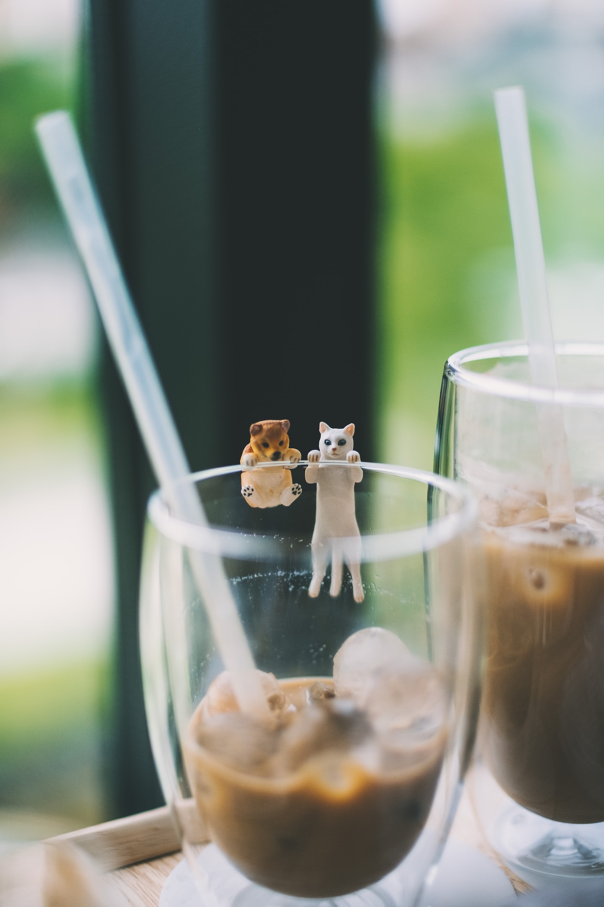

F.A.Q.

At Cat Cafe you pay for your time. Once inside, all hot and cold drinks are free and
unlimited. You can stay for as long as you like and are billed to the nearest 5 minutes
on exit.
It costs £1.25 for every 5 minutes you are in the cafe (per person). For example:
10 minutes = £2.50
20 minutes = £5.00
40 minutes = £10.00
60 minutes = £15.00
The above prices are per person
If you want to guarantee an entry time then please book a slot online. All bookings are
for 1 hour, but you can stay for longer if you wish (additional time is billed on exit).
If you wish to stay for less than 1 hour then please just turn up as a walk in customer,
although for walk-ins we cannot guarantee immediate entry at busy times.
We had to reconsider the issue of children visiting our establishment. We asked our
guests, read their responses and reviews, and after lengthy consideration of these
opinions and of suggestions from our patrons (many of whom are parents of young
children), we have decided that beginning April 1, 2018, we will enforce an 8-year-old
age limit at the coffee house on weekends.
On weekdays, children of all ages can visit the coffee house between 10am and 6pm, but
on weekends only children ages 8 and up.
Cat Cafe is a safe haven away from the bustling streets of busy life. We are passionate about Animal Assisted Therapy which has shown that spending time with cats not only reduces your heart rate and blood pressure but is good for mental health.
We offer an extensive menu of hot and cold drinks, have cosy sofas to cuddle up on and don’t set any limits to how long you are welcome to stay. All of this equates to a relaxing and calming atmosphere - the purrfect escape from stress.
Many of our cats are pedigree - this is because their natures are well suited to a cafe environment. Our cats and kittens come from registered GCCF breeders who abide by the rules of ethical breeding. Many of our cats have been re-homed from owners who were no longer able to keep them or because they have disabilities, such as blindness or hearing loss.
We also work with rehoming centres to see if we can offer any local cats their forever home. We will only ever take in cats that will be happy in our cafe and usually are struggling to find homes elsewhere.